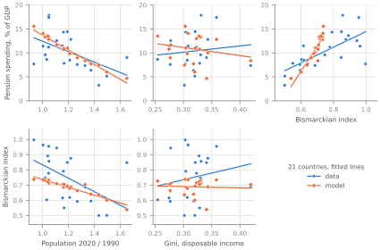
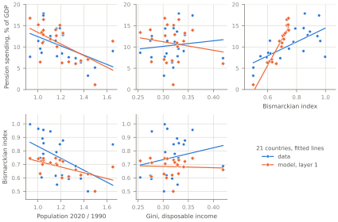
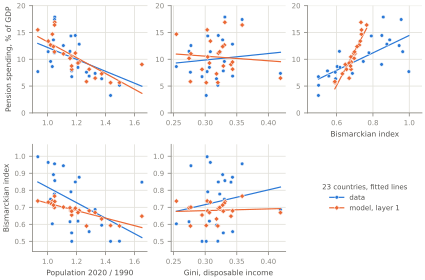
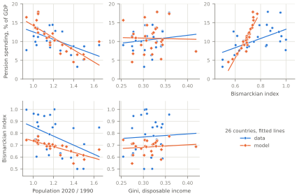
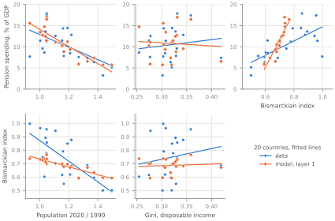
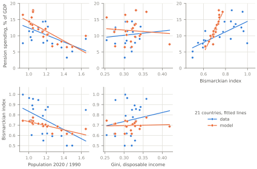

C5. The cross-country test
Section 7.3 of the paper tests the model on the countries of figure 1.1. Every country keeps its own workers per retiree, corrected for its gap to the U.S. statutory retirement age, its income distribution, its observed design and its propensities to vote by income group, from the CSES; Luxembourg, which has no CSES survey and enforces compulsory voting, votes at the same rate in every income group. Every country takes from the U.S. the discount factor \(\beta\) and the cost of redistribution as the elasticity \(\varepsilon\), so that country \(n\) faces \(\lambda_{n,t} = \varepsilon\,\Pi_{n,t}/R_{n,t}\) at its own ratio of the pay-as-you-go return to the market return. In the model every country also takes the same political weight of the old \(\omega\), the mean of the weights that match each country’s pension spending at its observed design; the model with each country’s own political weight, own \(\omega\) for short, calibrates each country’s \(\omega\) to that spending. The U.S. anchor, where \(\omega\) and \(\varepsilon\) are calibrated, is measured as every other country is (appendix G.2 of the paper). This page shows the variants of appendix G in full, and the test with Luxembourg left out and with the model at the U.S. political weight.
The paper’s specification
The paper reports the test in figure 7.2 and table 5, and each country’s own political weight and the design it chooses with own \(\omega\) in table 10. Table 11 gives the slopes under each variant below, and figures G.1 and G.2 the predicted designs.
Other population data
Workers per retiree as the population data give them, and corrected for each country’s gap to the U.S. effective age of labour-market exit in place of the statutory age. The data side of the test does not depend on them. With own \(\omega\) the test hardly moves under either reading, since the political weights are calibrated to spending. In the model the exit age leaves the test close to the paper’s. With workers per retiree uncorrected, Luxembourg, whose population grew fastest, chooses a design close to the Beveridgean corner, and the predicted designs track the observed ones much less closely; without Luxembourg they track them about as closely as under either correction (appendix G.4 of the paper).
Uncorrected
\(\cdot\)

Source
Reads:
data/oecd26_sample.csvdata/oecd26_theta.csvdata/oecdFigure1.csvresults/calibration/US_rhoGridCommonX.csvresults/oecd26/anchor.csvresults/oecd26/layer1.csv
Built by figuresOECD26.oecd26Figure (python/paper) at commit 4d49d90. Rebuild: .venv\Scripts\python.exe python\paper\build.py --only OECD26_Layer1_nuNone, then build.py --site.
\(\cdot\)
| Data | Model, own \(\omega\) | |||||||
|---|---|---|---|---|---|---|---|---|
| Country | \(\nu_{2020}\) | \(\tilde V\) | spending | \(I\) | \(\theta\) | \(\omega\) | \(\theta\) | \(I\) |
| Austria | 1.16 | 0.161 | 14.3 | 0.791 | 0.736 | 1.564 | 0.612 | 0.720 |
| Belgium | 1.16 | 0.104 | 11.5 | 0.616 | 0.376 | 1.380 | 0.605 | 0.717 |
| Canada | 1.37 | 0.171 | 6.4 | 0.595 | 0.318 | 1.235 | 0.364 | 0.611 |
| Czech Republic | 1.02 | 0.170 | 8.6 | 0.603 | 0.342 | 1.049 | 0.514 | 0.673 |
| Finland | 1.11 | 0.094 | 12.6 | 0.944 | 0.941 | 1.403 | 0.619 | 0.724 |
| France | 1.16 | 0.150 | 14.4 | 0.849 | 0.822 | 1.577 | 0.626 | 0.728 |
| Germany | 1.05 | 0.148 | 11.2 | 0.778 | 0.714 | 1.218 | 0.566 | 0.697 |
| Greece | 1.04 | 0.225 | 17.9 | 0.857 | 0.833 | 1.665 | 0.649 | 0.740 |
| Hungary | 0.94 | 0.265 | 7.7 | 0.997 | 0.997 | 0.946 | 0.522 | 0.677 |
| Ireland | 1.42 | 0.240 | 3.3 | 0.500 | 0.000 | 1.026 | 0.000 | 0.500 |
| Italy | 1.05 | 0.134 | 17.4 | 0.956 | 0.954 | 1.678 | 0.710 | 0.775 |
| Japan | 1.02 | 0.124 | 9.6 | 0.747 | 0.662 | 1.104 | 0.551 | 0.690 |
| Luxembourg | 1.65 | 0.187 | 9.0 | 0.848 | 0.820 | 1.724 | 0.471 | 0.654 |
| New Zealand | 1.49 | 0.141 | 5.1 | 0.501 | 0.003 | 1.275 | 0.273 | 0.579 |
| Norway | 1.27 | 0.101 | 7.6 | 0.593 | 0.313 | 1.237 | 0.428 | 0.636 |
| Poland | 1.00 | 0.240 | 11.4 | 0.964 | 0.962 | 1.198 | 0.611 | 0.720 |
| Portugal | 1.04 | 0.249 | 13.6 | 0.892 | 0.879 | 1.356 | 0.621 | 0.725 |
| Spain | 1.22 | 0.183 | 12.8 | 0.877 | 0.859 | 1.539 | 0.611 | 0.720 |
| Sweden | 1.21 | 0.081 | 8.5 | 0.619 | 0.383 | 1.239 | 0.470 | 0.654 |
| United Kingdom | 1.17 | 0.185 | 7.8 | 0.550 | 0.181 | 1.167 | 0.503 | 0.668 |
| United States\(^{\ast}\) | 1.34 | 0.333 | 7.4 | 0.687 | 0.544 | 1.257 | 0.544 | 0.687 |
Note: 21 countries. \(\nu_{2020}\), workers per retiree; \(\tilde V\), the dispersion of relative incomes at the U.S. income percentiles; spending in % of GDP; \(\theta\), the earnings-linked share of the least-squares line through the public pension at 0.5, 1 and 2 times average earnings (\(c/(a+c)\) of \(p(y) = a + c\,y\)), times one minus the share of public spending on minimum top-ups and tested benefits, and \(I = 1/(2-\theta)\), the Bismarckian index. \(\omega\) is calibrated to spending at the observed design at \(\beta = 0.65\) and the U.S. \(\varepsilon = 13.09\), \(\lambda_{n,t} = \varepsilon\,\Pi_{n,t}/R_{n,t}\); the last two columns are the model’s design, in force in 2020 on the freely simulated path, chosen in 1990, and its index. \(^{\ast}\)The U.S. is the anchor, where \(\omega\) and \(\varepsilon\) are calibrated. Turnout: each country’s own propensities to vote by income group, from the CSES; Luxembourg, which has no CSES survey and enforces compulsory voting, at a flat profile.
Source
Reads:
data/oecd26_sample.csvdata/oecd26_theta.csvdata/oecdFigure1.csvresults/calibration/US_rhoGridCommonX.csvresults/oecd26/anchor.csvresults/oecd26/layer2.csv
Built by tablesOECD26.oecd26Omega (python/paper) at commit 4d49d90. Rebuild: .venv\Scripts\python.exe python\paper\build.py --only OECD26_Omega_nuNone, then build.py --site.
The effective exit age
\(\cdot\)

Source
Reads:
data/oecd26_sample.csvdata/oecd26_theta.csvdata/oecdFigure1.csvresults/calibration/US_rhoGridCommonX.csvresults/oecd26/anchor.csvresults/oecd26/layer1.csv
Built by figuresOECD26.oecd26Figure (python/paper) at commit 4d49d90. Rebuild: .venv\Scripts\python.exe python\paper\build.py --only OECD26_Layer1_nuExit, then build.py --site.
\(\cdot\)
| Data | Model, own \(\omega\) | |||||||
|---|---|---|---|---|---|---|---|---|
| Country | \(\nu_{2020}\) | \(\tilde V\) | spending | \(I\) | \(\theta\) | \(\omega\) | \(\theta\) | \(I\) |
| Austria | 0.95 | 0.161 | 14.3 | 0.791 | 0.736 | 1.276 | 0.612 | 0.720 |
| Belgium | 0.87 | 0.104 | 11.5 | 0.616 | 0.376 | 1.041 | 0.605 | 0.717 |
| Canada | 1.28 | 0.171 | 6.4 | 0.595 | 0.318 | 1.147 | 0.363 | 0.611 |
| Czech Republic | 0.91 | 0.170 | 8.6 | 0.603 | 0.342 | 0.932 | 0.514 | 0.673 |
| Finland | 0.97 | 0.094 | 12.6 | 0.944 | 0.941 | 1.228 | 0.619 | 0.724 |
| France | 0.84 | 0.150 | 14.4 | 0.849 | 0.822 | 1.141 | 0.626 | 0.728 |
| Germany | 0.93 | 0.148 | 11.2 | 0.778 | 0.714 | 1.081 | 0.566 | 0.697 |
| Greece | 0.79 | 0.225 | 17.9 | 0.857 | 0.833 | 1.266 | 0.649 | 0.740 |
| Hungary | 0.78 | 0.265 | 7.7 | 0.997 | 0.997 | 0.788 | 0.522 | 0.676 |
| Ireland | 1.28 | 0.240 | 3.3 | 0.500 | 0.000 | 0.926 | 0.000 | 0.500 |
| Italy | 0.88 | 0.134 | 17.4 | 0.956 | 0.954 | 1.404 | 0.711 | 0.776 |
| Japan | 1.27 | 0.124 | 9.6 | 0.747 | 0.662 | 1.374 | 0.551 | 0.690 |
| Luxembourg | 1.02 | 0.187 | 9.0 | 0.848 | 0.820 | 1.064 | 0.473 | 0.655 |
| New Zealand | 1.80 | 0.141 | 5.1 | 0.501 | 0.003 | 1.536 | 0.273 | 0.579 |
| Norway | 1.27 | 0.101 | 7.6 | 0.593 | 0.313 | 1.239 | 0.428 | 0.636 |
| Poland | 0.84 | 0.240 | 11.4 | 0.964 | 0.962 | 1.002 | 0.610 | 0.720 |
| Portugal | 1.04 | 0.249 | 13.6 | 0.892 | 0.879 | 1.359 | 0.621 | 0.725 |
| Spain | 0.92 | 0.183 | 12.8 | 0.877 | 0.859 | 1.160 | 0.611 | 0.720 |
| Sweden | 1.28 | 0.081 | 8.5 | 0.619 | 0.383 | 1.312 | 0.470 | 0.654 |
| United Kingdom | 1.07 | 0.185 | 7.8 | 0.550 | 0.181 | 1.069 | 0.504 | 0.668 |
| United States\(^{\ast}\) | 1.34 | 0.333 | 7.4 | 0.687 | 0.544 | 1.257 | 0.544 | 0.687 |
Note: 21 countries. \(\nu_{2020}\), workers per retiree; \(\tilde V\), the dispersion of relative incomes at the U.S. income percentiles; spending in % of GDP; \(\theta\), the earnings-linked share of the least-squares line through the public pension at 0.5, 1 and 2 times average earnings (\(c/(a+c)\) of \(p(y) = a + c\,y\)), times one minus the share of public spending on minimum top-ups and tested benefits, and \(I = 1/(2-\theta)\), the Bismarckian index. \(\omega\) is calibrated to spending at the observed design at \(\beta = 0.65\) and the U.S. \(\varepsilon = 13.09\), \(\lambda_{n,t} = \varepsilon\,\Pi_{n,t}/R_{n,t}\); the last two columns are the model’s design, in force in 2020 on the freely simulated path, chosen in 1990, and its index. \(^{\ast}\)The U.S. is the anchor, where \(\omega\) and \(\varepsilon\) are calibrated. Turnout: each country’s own propensities to vote by income group, from the CSES; Luxembourg, which has no CSES survey and enforces compulsory voting, at a flat profile.
Source
Reads:
data/oecd26_sample.csvdata/oecd26_theta.csvdata/oecdFigure1.csvresults/calibration/US_rhoGridCommonX.csvresults/oecd26/anchor.csvresults/oecd26/layer2.csv
Built by tablesOECD26.oecd26Omega (python/paper) at commit 4d49d90. Rebuild: .venv\Scripts\python.exe python\paper\build.py --only OECD26_Omega_nuExit, then build.py --site.
Other measures of the design
Each measure of the design is its own cross-section: the data and the model are calibrated to it, on the countries where it is defined, with the U.S. anchor recalibrated under it (appendix G.4 of the paper). The public tier on 23 countries leaves the test as it is. Under all mandatory tiers the relations keep their signs, while the model predicts the design less well, in part because it puts Iceland, which only this measure covers, close to the Beveridgean corner.
The public tier on 23 countries
\(\cdot\)

Source
Reads:
data/oecd26_sample.csvdata/oecd26_theta.csvdata/oecdFigure1.csvresults/oecd26_theta_A/anchor.csvresults/oecd26_theta_A/calibration/US_rhoGridCommonX.csvresults/oecd26_theta_A/layer1.csv
Built by figuresOECD26.oecd26Figure (python/paper) at commit 4d49d90. Rebuild: .venv\Scripts\python.exe python\paper\build.py --only OECD26_Layer1_thetaA, then build.py --site.
\(\cdot\)
| Data | Model, own \(\omega\) | |||||||
|---|---|---|---|---|---|---|---|---|
| Country | \(\nu_{2020}\) | \(\tilde V\) | spending | \(I\) | \(\theta\) | \(\omega\) | \(\theta\) | \(I\) |
| Austria | 1.08 | 0.161 | 14.3 | 0.791 | 0.736 | 1.456 | 0.612 | 0.720 |
| Belgium | 1.08 | 0.104 | 11.5 | 0.616 | 0.376 | 1.284 | 0.605 | 0.717 |
| Canada | 1.27 | 0.171 | 6.4 | 0.595 | 0.318 | 1.141 | 0.363 | 0.611 |
| Czech Republic | 0.87 | 0.170 | 8.6 | 0.603 | 0.342 | 0.896 | 0.514 | 0.673 |
| Finland | 1.03 | 0.094 | 12.6 | 0.944 | 0.941 | 1.308 | 0.619 | 0.724 |
| France | 1.04 | 0.150 | 14.4 | 0.849 | 0.822 | 1.416 | 0.626 | 0.728 |
| Germany | 1.03 | 0.148 | 11.2 | 0.778 | 0.714 | 1.190 | 0.566 | 0.697 |
| Greece | 0.79 | 0.225 | 17.9 | 0.857 | 0.833 | 1.266 | 0.649 | 0.740 |
| Hungary | 0.85 | 0.265 | 7.7 | 0.997 | 0.997 | 0.858 | 0.522 | 0.677 |
| Ireland | 1.42 | 0.240 | 3.3 | 0.500 | 0.000 | 1.026 | 0.000 | 0.500 |
| Italy | 0.80 | 0.134 | 17.4 | 0.956 | 0.954 | 1.275 | 0.711 | 0.776 |
| Japan | 0.96 | 0.124 | 9.6 | 0.747 | 0.662 | 1.032 | 0.551 | 0.690 |
| Luxembourg | 1.17 | 0.187 | 9.0 | 0.848 | 0.820 | 1.225 | 0.473 | 0.655 |
| Netherlands | 1.20 | 0.116 | 6.8 | 0.500 | 0.000 | 1.140 | 0.425 | 0.635 |
| New Zealand | 1.37 | 0.141 | 5.1 | 0.501 | 0.003 | 1.174 | 0.273 | 0.579 |
| Norway | 1.35 | 0.101 | 7.6 | 0.593 | 0.313 | 1.313 | 0.428 | 0.636 |
| Poland | 0.94 | 0.240 | 11.4 | 0.964 | 0.962 | 1.121 | 0.611 | 0.720 |
| Portugal | 0.99 | 0.249 | 13.6 | 0.892 | 0.879 | 1.296 | 0.621 | 0.725 |
| Spain | 1.13 | 0.183 | 12.8 | 0.877 | 0.859 | 1.430 | 0.611 | 0.720 |
| Sweden | 1.12 | 0.081 | 8.5 | 0.619 | 0.383 | 1.151 | 0.470 | 0.654 |
| Switzerland | 1.19 | 0.127 | 6.9 | 0.557 | 0.205 | 1.132 | 0.477 | 0.656 |
| United Kingdom | 1.17 | 0.185 | 7.8 | 0.550 | 0.181 | 1.167 | 0.503 | 0.668 |
| United States\(^{\ast}\) | 1.34 | 0.333 | 7.4 | 0.687 | 0.544 | 1.257 | 0.544 | 0.687 |
Note: 23 countries. \(\nu_{2020}\), workers per retiree; \(\tilde V\), the dispersion of relative incomes at the U.S. income percentiles; spending in % of GDP; \(\theta\) measured as public tier, 23 countries (appendix G.4 of the paper), and \(I = 1/(2-\theta)\). \(\omega\) is calibrated to spending at the observed design at \(\beta = 0.65\) and the U.S. \(\varepsilon = 13.09\), \(\lambda_{n,t} = \varepsilon\,\Pi_{n,t}/R_{n,t}\); the last two columns are the model’s design, in force in 2020 on the freely simulated path, chosen in 1990, and its index. \(^{\ast}\)The U.S. is the anchor, where \(\omega\) and \(\varepsilon\) are calibrated. Turnout: each country’s own propensities to vote by income group, from the CSES; Luxembourg, which has no CSES survey and enforces compulsory voting, at a flat profile.
Source
Reads:
data/oecd26_sample.csvdata/oecd26_theta.csvdata/oecdFigure1.csvresults/oecd26_theta_A/anchor.csvresults/oecd26_theta_A/calibration/US_rhoGridCommonX.csvresults/oecd26_theta_A/layer2.csv
Built by tablesOECD26.oecd26Omega (python/paper) at commit 4d49d90. Rebuild: .venv\Scripts\python.exe python\paper\build.py --only OECD26_Omega_thetaA, then build.py --site.
All mandatory tiers
\(\cdot\)

Source
Reads:
data/oecd26_sample.csvdata/oecd26_theta.csvdata/oecdFigure1.csvresults/oecd26_theta_B/anchor.csvresults/oecd26_theta_B/calibration/US_rhoGridCommonX.csvresults/oecd26_theta_B/layer1.csv
Built by figuresOECD26.oecd26Figure (python/paper) at commit 4d49d90. Rebuild: .venv\Scripts\python.exe python\paper\build.py --only OECD26_Layer1_thetaB, then build.py --site.
\(\cdot\)
| Data | Model, own \(\omega\) | |||||||
|---|---|---|---|---|---|---|---|---|
| Country | \(\nu_{2020}\) | \(\tilde V\) | spending | \(I\) | \(\theta\) | \(\omega\) | \(\theta\) | \(I\) |
| Australia | 1.50 | 0.202 | 8.7 | 0.708 | 0.587 | 1.513 | 0.475 | 0.656 |
| Austria | 1.08 | 0.161 | 14.3 | 0.791 | 0.736 | 1.456 | 0.612 | 0.720 |
| Belgium | 1.08 | 0.104 | 11.5 | 0.616 | 0.376 | 1.284 | 0.605 | 0.717 |
| Canada | 1.27 | 0.171 | 6.4 | 0.595 | 0.318 | 1.141 | 0.363 | 0.611 |
| Czech Republic | 0.87 | 0.170 | 9.0 | 0.603 | 0.342 | 0.915 | 0.527 | 0.679 |
| Denmark | 1.09 | 0.116 | 10.2 | 0.664 | 0.494 | 1.211 | 0.529 | 0.680 |
| Finland | 1.03 | 0.094 | 12.6 | 0.944 | 0.941 | 1.308 | 0.619 | 0.724 |
| France | 1.04 | 0.150 | 14.4 | 0.849 | 0.822 | 1.416 | 0.626 | 0.728 |
| Germany | 1.03 | 0.148 | 11.2 | 0.778 | 0.714 | 1.190 | 0.566 | 0.697 |
| Greece | 0.79 | 0.225 | 17.9 | 0.857 | 0.833 | 1.269 | 0.649 | 0.740 |
| Hungary | 0.85 | 0.265 | 7.7 | 0.997 | 0.997 | 0.858 | 0.522 | 0.677 |
| Iceland | 1.52 | 0.112 | 8.7 | 0.842 | 0.813 | 1.586 | 0.490 | 0.662 |
| Ireland | 1.42 | 0.240 | 3.3 | 0.500 | 0.000 | 1.026 | 0.000 | 0.500 |
| Italy | 0.80 | 0.134 | 17.7 | 0.956 | 0.954 | 1.293 | 0.715 | 0.778 |
| Japan | 0.96 | 0.124 | 9.9 | 0.747 | 0.662 | 1.050 | 0.561 | 0.695 |
| Luxembourg | 1.17 | 0.187 | 9.0 | 0.848 | 0.820 | 1.225 | 0.473 | 0.655 |
| Netherlands | 1.20 | 0.116 | 10.0 | 0.954 | 0.952 | 1.342 | 0.551 | 0.690 |
| New Zealand | 1.37 | 0.141 | 5.1 | 0.501 | 0.003 | 1.174 | 0.273 | 0.579 |
| Norway | 1.35 | 0.101 | 7.6 | 0.632 | 0.417 | 1.311 | 0.427 | 0.636 |
| Poland | 0.94 | 0.240 | 11.4 | 0.964 | 0.962 | 1.121 | 0.611 | 0.720 |
| Portugal | 0.99 | 0.249 | 13.6 | 0.892 | 0.879 | 1.296 | 0.621 | 0.725 |
| Spain | 1.13 | 0.183 | 12.8 | 0.877 | 0.859 | 1.430 | 0.611 | 0.720 |
| Sweden | 1.12 | 0.081 | 10.5 | 1.000 | 1.000 | 1.294 | 0.562 | 0.695 |
| Switzerland | 1.19 | 0.127 | 12.7 | 0.587 | 0.297 | 1.526 | 0.661 | 0.747 |
| United Kingdom | 1.17 | 0.185 | 8.5 | 0.694 | 0.559 | 1.181 | 0.512 | 0.672 |
| United States\(^{\ast}\) | 1.34 | 0.333 | 7.4 | 0.687 | 0.544 | 1.257 | 0.544 | 0.687 |
Note: 26 countries. \(\nu_{2020}\), workers per retiree; \(\tilde V\), the dispersion of relative incomes at the U.S. income percentiles; spending in % of GDP; \(\theta\) measured as all mandatory tiers (appendix G.4 of the paper), and \(I = 1/(2-\theta)\). \(\omega\) is calibrated to spending at the observed design at \(\beta = 0.65\) and the U.S. \(\varepsilon = 13.09\), \(\lambda_{n,t} = \varepsilon\,\Pi_{n,t}/R_{n,t}\); the last two columns are the model’s design, in force in 2020 on the freely simulated path, chosen in 1990, and its index. \(^{\ast}\)The U.S. is the anchor, where \(\omega\) and \(\varepsilon\) are calibrated. Turnout: each country’s own propensities to vote by income group, from the CSES; Luxembourg, which has no CSES survey and enforces compulsory voting, at a flat profile.
Source
Reads:
data/oecd26_sample.csvdata/oecd26_theta.csvdata/oecdFigure1.csvresults/oecd26_theta_B/anchor.csvresults/oecd26_theta_B/calibration/US_rhoGridCommonX.csvresults/oecd26_theta_B/layer2.csv
Built by tablesOECD26.oecd26Omega (python/paper) at commit 4d49d90. Rebuild: .venv\Scripts\python.exe python\paper\build.py --only OECD26_Omega_thetaB, then build.py --site.
Luxembourg left out
The test on the countries with a CSES survey, all but Luxembourg. Without Luxembourg the data’s index falls more steeply with population growth than with it, and the model’s index falls much less steeply than the data’s.
\(\cdot\)

Source
Reads:
data/oecd26_sample.csvdata/oecd26_theta.csvdata/oecdFigure1.csvresults/calibration/US_rhoGridCommonX.csvresults/oecd26/anchor.csvresults/oecd26/layer1.csv
Built by figuresOECD26.oecd26Figure (python/paper) at commit 4d49d90. Rebuild: .venv\Scripts\python.exe python\paper\build.py --only OECD26_Layer1_cses, then build.py --site.
\(\cdot\)
| Relation | Data | Model | Own \(\omega\) |
|---|---|---|---|
| Pension spending on population growth | −14.91 \((4.92)\) | −20.35 \((2.51)\) | −15.82 \((4.81)\) |
| Pension spending on the Gini | 14.79 \((26.28)\) | −7.28 \((23.70)\) | 14.10 \((26.48)\) |
| Pension spending on the Bismarckian index | 16.90 \((3.94)\) | 65.25 \((6.03)\) | 56.32 \((6.51)\) |
| Bismarckian index on population growth | −0.77 \((0.18)\) | −0.29 \((0.03)\) | −0.30 \((0.07)\) |
| Bismarckian index on the Gini | 0.80 \((1.10)\) | 0.12 \((0.34)\) | 0.35 \((0.42)\) |
Note: Least-squares slopes, standard errors in parentheses, 20 countries. The model’s index is \(1/(2-\theta)\) of the design in force in 2020, chosen in 1990, and its spending \(\tau(1-\alpha)\) in 2020 on the path of the design it chooses. The model: every country at the U.S. \(\beta = 0.65\) and \(\varepsilon = 13.09\), at \(\omega = 1.20\), the mean of the countries’ own \(\omega\), each at its cost \(\lambda_{n,t} = \varepsilon\,\Pi_{n,t}/R_{n,t}\); own \(\omega\): each country’s \(\omega\) calibrated to its spending at its observed design. Turnout: each country’s own propensities to vote by income group, from the CSES.
Source
Reads:
data/oecd26_sample.csvdata/oecd26_theta.csvdata/oecdFigure1.csvresults/calibration/US_rhoGridCommonX.csvresults/oecd26/anchor.csvresults/oecd26/layer1.csvresults/oecd26/layer2.csv
Built by tablesOECD26.oecd26Slopes (python/paper) at commit 4d49d90. Rebuild: .venv\Scripts\python.exe python\paper\build.py --only OECD26_Slopes_cses, then build.py --site.
The model at the U.S. political weight
Every country in the model at the U.S. \(\omega\) in place of the mean of the countries’ own weights. The results with own \(\omega\) do not depend on this choice and are the paper’s. At the U.S. weight, above that mean, the countries choose somewhat more Bismarckian designs and spend more, while the cross-section is nearly the paper’s: the predicted designs track the observed ones about as closely, and every slope keeps its sign.
\(\cdot\)

Source
Reads:
data/oecd26_sample.csvdata/oecd26_theta.csvdata/oecdFigure1.csvresults/calibration/US_rhoGridCommonX.csvresults/oecd26/anchor.csvresults/oecd26/layer1.csv
Built by figuresOECD26.oecd26Figure (python/paper) at commit 4d49d90. Rebuild: .venv\Scripts\python.exe python\paper\build.py --only OECD26_Layer1_omegaUS, then build.py --site.
\(\cdot\)
| Relation | Data | Model | Own \(\omega\) |
|---|---|---|---|
| Pension spending on population growth | −10.89 \((4.11)\) | −14.84 \((2.72)\) | −11.34 \((4.08)\) |
| Pension spending on the Gini | 13.04 \((25.40)\) | −9.04 \((23.09)\) | 12.59 \((25.56)\) |
| Pension spending on the Bismarckian index | 16.33 \((3.91)\) | 72.28 \((6.84)\) | 56.20 \((6.31)\) |
| Bismarckian index on population growth | −0.44 \((0.18)\) | −0.20 \((0.03)\) | −0.22 \((0.06)\) |
| Bismarckian index on the Gini | 0.88 \((1.06)\) | 0.08 \((0.30)\) | 0.31 \((0.40)\) |
Note: Least-squares slopes, standard errors in parentheses, 21 countries. The model’s index is \(1/(2-\theta)\) of the design in force in 2020, chosen in 1990, and its spending \(\tau(1-\alpha)\) in 2020 on the path of the design it chooses. The model: every country at the U.S. \(\beta = 0.65\), \(\omega = 1.26\) and \(\varepsilon = 13.09\), each at its cost \(\lambda_{n,t} = \varepsilon\,\Pi_{n,t}/R_{n,t}\); own \(\omega\): each country’s \(\omega\) calibrated to its spending at its observed design. Turnout: each country’s own propensities to vote by income group, from the CSES; Luxembourg, which has no CSES survey and enforces compulsory voting, at a flat profile.
Source
Reads:
data/oecd26_sample.csvdata/oecd26_theta.csvdata/oecdFigure1.csvresults/calibration/US_rhoGridCommonX.csvresults/oecd26/anchor.csvresults/oecd26/layer1.csvresults/oecd26/layer2.csv
Built by tablesOECD26.oecd26Slopes (python/paper) at commit 4d49d90. Rebuild: .venv\Scripts\python.exe python\paper\build.py --only OECD26_Slopes_omegaUS, then build.py --site.
The countries outside the test
Figure 1.1, and so the test, leaves out the OECD members before 2000 that the model does not represent. In Korea, Mexico and Turkey a large share of employment is informal, and the model of sections 6 and 7 has no informal households. In Australia, Denmark, Iceland, the Netherlands and Switzerland funded tiers pay a large share of mandatory benefits, or the public pension is tested against them, where the model has a single public pay-as-you-go system. D1 gives the data of the countries the figure covers.